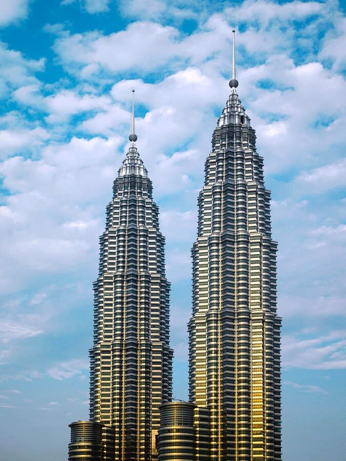
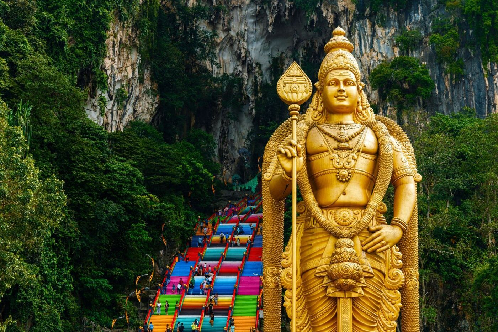
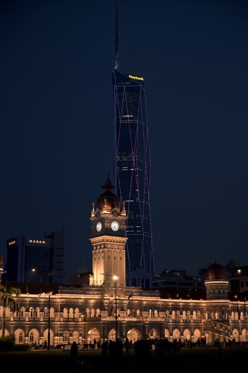
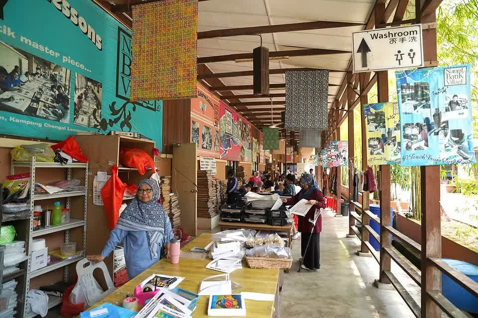

Take the 8:30 am start
Mornings are cooler and drier. Heavy rain in KL usually arrives as short thunderstorms in the mid-to-late afternoon, so the morning tour avoids most of it, and Batu Caves is calmer before the coach groups arrive.
Twin towers, a limestone cave temple, red lanterns, colonial squares, local crafts and hand-drawn batik. Your own guide and your own car, from your hotel door.
Discover Kuala Lumpur on a tour run only for your group. A local Welspear Elite driver-guide collects you from your hotel and takes you through the city's best-known sights, its temples and its craft traditions, at a comfortable pace.
It's made for first-time visitors and anyone short on time who wants the highlights of KL without a shared coach tour. Ages 1 to 99 are welcome, and the car takes wheelchairs and pushchairs.
Stop times are approximate. Your guide adjusts the order around traffic and opening hours. Batu Caves is the furthest stop, about 13 km north of the city centre.
Your guide meets you in your hotel lobby in Kuala Lumpur. Airport and Port Klang pickups aren't included.

The 88-storey steel towers at the heart of KLCC. Photos from the park side and time to look around the base.

The rainbow staircase climbs to a Hindu temple inside a limestone hill, watched over by the giant golden statue of Lord Murugan.
A six-tiered Chinese temple on Robson Hill, strung with red lanterns and looking out over the city.

Where Malaysia declared independence in 1957, framed by the copper domes of the Sultan Abdul Samad Building.
An art deco market hall full of local handicrafts, songket, wood carving and souvenirs to take home.

See how Malaysian batik is made, from wax drawn by hand with a canting to the final dye bath.
You return to your starting point, usually around four hours after pickup.
Kuala Lumpur is warm all year, usually 31 to 33°C by midday. What changes is the rain and the festival calendar.
Mornings are cooler and drier. Heavy rain in KL usually arrives as short thunderstorms in the mid-to-late afternoon, so the morning tour avoids most of it, and Batu Caves is calmer before the coach groups arrive.
Over a million pilgrims and devotees carrying kavadi climb to the temple. It's unforgettable, but roads close and the steps are packed. Ask us before booking on the festival day itself.
Thean Hou Temple is at its most beautiful, with thousands of extra red lanterns. Expect crowds, and note some Central Market shops close for the first few days.
Storms are stronger and more frequent. Tours still run; your guide reorders the stops so you're under cover when the rain comes. Bring a light umbrella.
Flags line the streets around Dataran Merdeka. The square can close for parade rehearsals in August, in which case we view it from the edge.
Evening food bazaars fill the city during Ramadan, and some shops keep shorter hours. Ramadan moves about 11 days earlier every year, so check the dates for your trip.
The Festival of Lights brings colourful kolam and oil lamps to Batu Caves and Little India. A lovely time to visit.
An excellent city tour! Our guide phoned me to offer complimentary hotel pick up after I booked. The guide provided excellent commentary with historical background. Excellent value for the money!
Our tour guide Ramesh was amazing. Would highly recommend as you get to see the main sites of Malaysia. Perfect way to see things if you're short on time.
A great tour to see the main sites of Kuala Lumpur, particularly if you are only here for a short time. It gives you just the right amount of time in each place.
Our guide, Mr. Ramesh, explained the history of Malaysia and the places we visited very clearly. A perfect tour for beginners in Kuala Lumpur.
Jennifer was absolutely phenomenal. She took the time to get to know us and made us feel as though we were exploring the city with a longtime friend.
Very knowledgeable and enthusiastic. His explanations of historical events and monuments were interesting and clear.
You get to see all the main sights in one go. There is enough time to look around and walk through the places you visit.
Reviews from Tripadvisor, excerpted. Rating as of 5 Nov 2026. Read all reviews
Light, breathable clothes and comfortable walking shoes. Batu Caves and Thean Hou are working temples, so cover your shoulders and knees. If you forget, sarongs can be rented for a small fee at the foot of the Batu Caves steps.
They're steep and take most people 10 to 15 minutes at an easy pace, with places to stop on the way. The climb is optional. You can stay at the base, see the golden statue up close and still enjoy the stop.
Long-tailed macaques live around the Batu Caves steps. They're used to people but will grab food, drinks and plastic bags. Keep snacks out of sight, hold on to phones and sunglasses, and don't feed them.
The tour goes ahead. Several stops are partly or fully covered, and your guide will reorder the route to keep you dry during a downpour. KL storms are usually short.
Yes. The vehicle is wheelchair accessible and infant seats are available, so mention them when you book. The Batu Caves steps aren't wheelchair accessible, but the base area, the statue and every other stop are easy to reach.
Entry to Thean Hou Temple is included. Batu Caves' main temple cave, the Petronas Towers exterior, Dataran Merdeka and Central Market are free to visit. Meals and personal shopping aren't included.
From your hotel lobby in Kuala Lumpur. Airport and Port Klang pickups aren't part of this tour. Your guide will contact you before the day to confirm the time and place.
It's a private tour, so within the four hours your guide can stay longer where you're enjoying yourselves and move on sooner elsewhere. Just ask on the day.
Cancel up to 24 hours before your start time for a full refund.